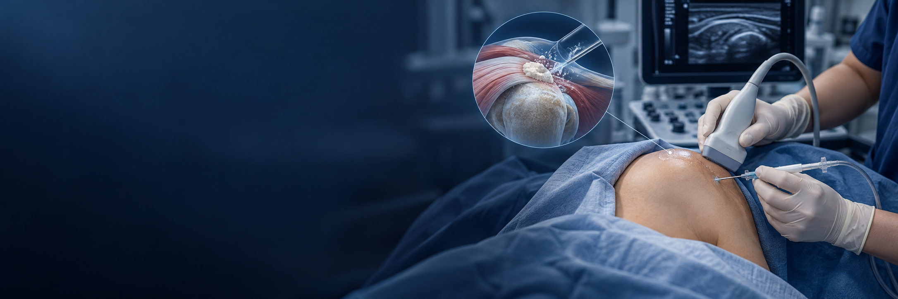

석회성 건염 석회 흡입술이란?
어깨 힘줄에 쌓인 석회를 초음파로 확인하고 바늘로 접근해 세척·흡인을 시도하는 치료입니다.
석회의 크기와 단단한 정도, 위치에 따라 제거 가능한 양과 반응이 달라지며 통증의 다른 원인도 함께 평가합니다.
초음파로 힘줄 속 석회 침착 부위를 확인한 뒤
바늘을 이용해 석회를 세척하고 흡인하는 치료입니다.

어깨 힘줄에 쌓인 석회를 초음파로 확인하고 바늘로 접근해 세척·흡인을 시도하는 치료입니다.
석회의 크기와 단단한 정도, 위치에 따라 제거 가능한 양과 반응이 달라지며 통증의 다른 원인도 함께 평가합니다.

석회가 보이는 위치와 실제 통증 부위를 함께 확인해 치료 대상을 정합니다.
석회의 성상과 힘줄 상태를 살펴 흡인 가능성과 이후 회복 계획을 안내합니다.
초음파 등 영상검사로 석회의 크기·위치와 주변 힘줄을 확인합니다.
초음파로 바늘의 위치를 확인하며 석회 세척과 흡인을 시도합니다.
통증과 움직임을 살피고 잔여 석회와 증상에 따라 추가 치료를 검토합니다.
석회 침착과 증상의 연관성을 먼저 확인합니다.
석회의 성상과 기존 치료 반응에 따라 흡인 여부를 판단합니다.
무리한 어깨 사용은 피하고 통증이 허용하는 범위에서 안내받은 운동을 하세요.
잔여 석회·증상은 경과를 확인하고, 발열·붉어짐·통증 악화 시 진료받으세요.